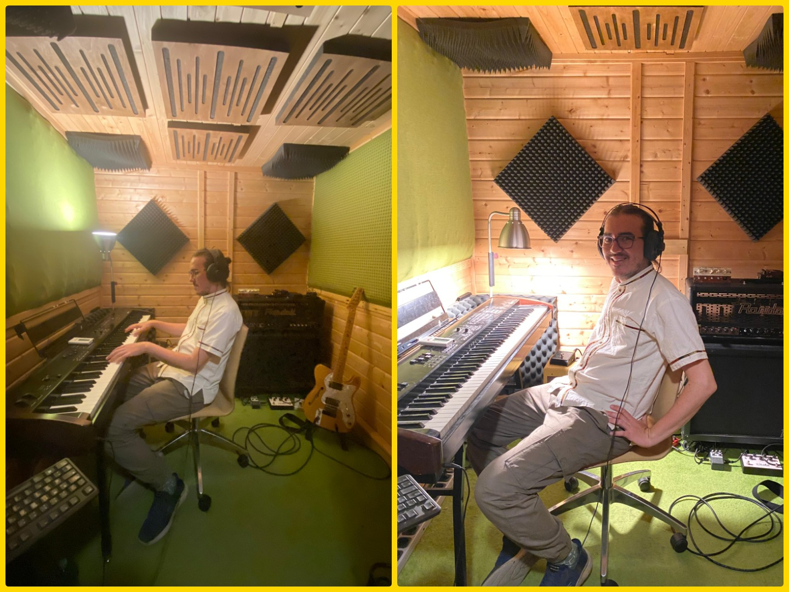
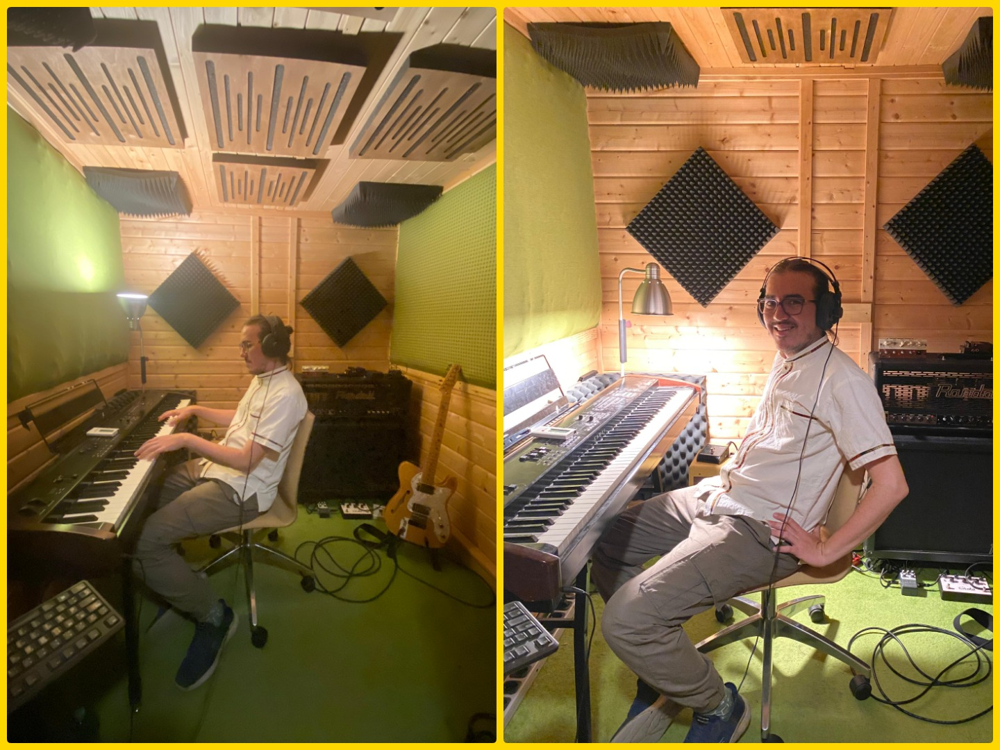

Producción Musical
El viaje de lo imaginario a lo concreto. Es para mí el arte de materializar ideas sonoras abstractas, combinando elementos creativos y técnicos para dar vida a una obra musical completa.


 


El viaje de lo imaginario a lo concreto. Es para mí el arte de materializar ideas sonoras abstractas, combinando elementos creativos y técnicos para dar vida a una obra musical completa.
Imaginar un espacio psicoacústico donde cohesionen elementos sonoros a través de procesos concretos como el control dinámico (compresores, limitadores, expansores, compuertas), el balance frecuencial (ecualizadores sustractivos, aditivos, estáticos, dinámicos, en cadena, saturadores), el control de espacialidad (moduladores de reverberación, delay, chorus, phaser, flanger) y otras técnicas de optimización para uso en dispositivos actuales de la industria musical.


Intervenir meticulosamente un contenido deteriorado o imperfecto con técnicas concretas como la restauración de frecuencias (ecualización forense, edición de espectrograma), la optimización de claridad (de-noise, de-essing, de-clicking, de-crackling), la eliminación de distorsiones (de-clipping, de-warping), la reconstrucción de la imagen estéreo (distribución y ensanchamiento mid-side) y otras técnicas para recuperar la integridad y calidad destacando la esencia musical.
Imaginar un sonido y moldearlo desde cero, a partir de formas de onda básicas o complejas (de osciladores, samples o ruidos) con técnicas concretas de síntesis (sustractiva, aditiva, AM, FM, tabla de onda), con diseño de envolventes ADSR (+DH), modulación con osciladores de baja frecuencia, efectos para el modelado de timbres y espacialidad, y otras técnicas para la creación de sonidos únicos y expresivos según la visión artística y el contexto musical.